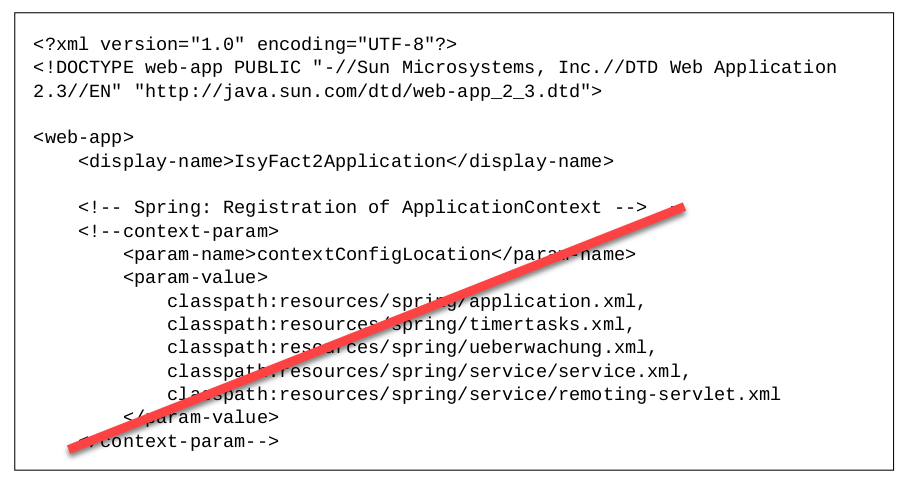
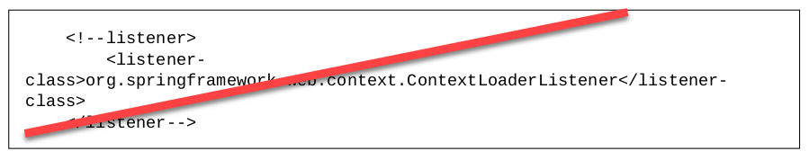
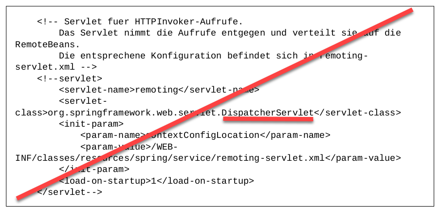
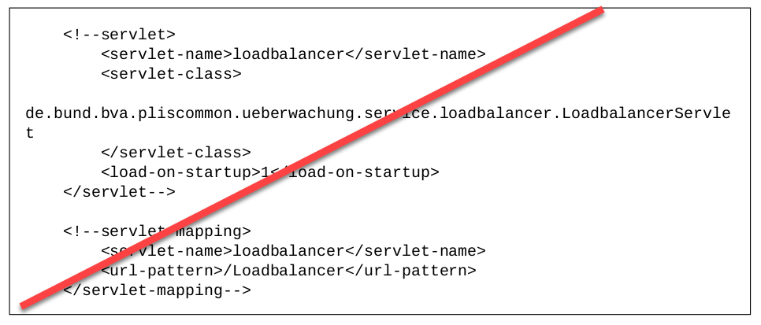
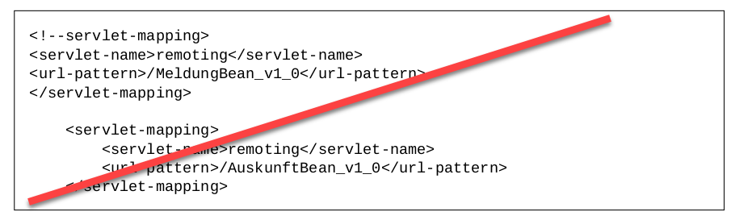
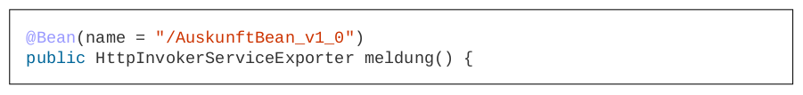
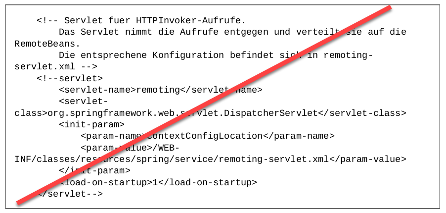

Migrationsleitfaden: Inhalt
Die IsyFact ist eine vom Bundesverwaltungsamt entwickele Software Factory für den Bau von Informationssystemen in komplexen IT-Anwendungslandschaften. Sie bündelt bestehendes technisches Know-how um Anwendungssysteme effizienter entwickeln und betreiben zu können.
Für die IsyFact gibt es zwei Versionszweige: IsyFact 1 und IsyFact 2.
Seit dem Jahr 2020 steht das neue Major-Release IsyFact 2 zur Verfügung. Dieser beruht auf den IsyFact Bausteinen der IsyFact 1 mit zwei wesentlichen Neuerungen:
-
Einführung von Spring Boot,
-
Unterstützung des Frontend-Frameworks Angular, zusätzlich zu JSF.
Die auf dieser Seite aufgeführten Hinweise sollen IsyFact Anwendungsentwicklern bei der Umstellung einer auf IsyFact 1 basierenden Anwendung auf IsyFact 2 helfen.
1. Geschäftsanwendung
1.1. Spring Konfiguration
-
Die Konfiguration von Spring wird von XML auf Java-Config umgestellt.
-
Für die betriebliche Konfiguration wird die Datei
application.propertiesanlegt.
1.2. Konfigurationsparameter
-
Die Bereitstellung von Konfigurationsparametern innerhalb der Geschäftsanwendung erfolgt über
@ConfigurationProperties-Klassen. Soll die Bibliothekisy-konfigurationweiterhin verwendet werden, muss die Bean aus der Spring-Konfiguration entfernt werden. Die Liste mit den Property-Dateien wird nachapplication.propertiesübertragen.
1.3. Applikationsklasse
-
Für eine auf IsyFact 2.x basierende Anwendung wird eine Applikationsklasse im Root-Package der Anwendung erstellt.
@SpringBootApplication public class IsyFact2Application extends SpringBootServletInitializer { @Override protected SpringApplicationBuilder configure(SpringApplicationBuilder application) { return application.sources(IsyFact2Application.class); } }
1.4. Deployment Descriptor web.xml
Bei einer Migration von einer IsyFact 1.x Version auf IsyFact 2.x sind Änderungen an der web.xml Datei (Deployment Descriptor) vorzunehmen.
1.4.1. Spring Kontext
-
Die Konfiguration des Spring-Kontextes erfolgt über Java-Config / Component Scan. Die Deklaration in der
web.xmlentfällt.Abbildung 1. Spring Kontext Deklaration entfällt
1.4.2. Logging
-
Die Deklaration zum Logging in der
web.xmlentfällt.Siehe Kapitel Bausteine/Logging.
1.4.3. Spring Context Loader
-
Der Spring-Kontext wird über
ServletInitializerhochgefahren. Die Listener-Deklaration in derweb.xmlentfällt.Siehe Kapitel Geschäftsanwendung/Applikationsklasse.
Abbildung 3. ContextLoaderListener entfällt
1.4.4. Dispatcher Servlet
-
Das Dispatcher-Servlet wird automatisch von Spring Boot konfiguriert. Die Trennung von Web- und Anwendungskontext entfällt.
Abbildung 4. DispatcherServlet entfällt
1.4.5. Loadbalancer
-
Das LoadBalancer-Servlet entfällt.
Siehe Kapitel Bausteine/Überwachung.
Abbildung 5. LoadBalancer entfällt
1.4.6. HttpInvokerServiceExporter
-
Beans vom Typ
HttpInvokerServiceExporterwerden automatisch von Spring Boot konfiguriert.Abbildung 6. HttpInvokerServiceExporter Servlets entfallenDer Pfad für das Mapping wird vom Namen der Bean abgeleitet.
Siehe Kapitel Bausteine/Service.
Abbildung 7. Bean Deklaration von HttpInvokerServiceExporterAbbildung 8. httpInvokerService entfällt
1.5. Unit-Tests
-
Verwendung der Annotation
SpringBootTestbei den Unit-Tests@RunWith(SpringRunner.class) @SpringBootTest(classes = RaumplanungApplication.class) @TestExecutionListeners({DependencyInjectionTestExecutionListener.class, TransactionDbUnitTestExecutionListener.class}) @DatabaseSetup("testdatensatz.xml") public class EintragControllerTest { }
2. Bausteine
2.1. Persistenz
-
Die Spring-Konfiguration für die Persistenz muss geändert werden (EntityManager, DataSource). Ebenso wird die betriebliche Konfiguration aus
jpa.propertiesnachapplication.propertiesübertragen. -
Sollen die alten DAOs aus
isy-persistenceweitergenutzt werden, dann sind diese als Beans in Java-Config zu übernehmen.
2.2. Logging
-
Die Konfiguration des Logging-Frameworks erfolgt über
logback.xmlund zusätzliche Properties inapplication.properties.Die Datei
logback.xmlliegt untersrc/main/resources. Die Änderung der Log-Level erfolgt überapplication.properties, diese werden nicht inlogback.xmlangegeben. -
Der
LogbackConfigListenerentfällt komplett, d.h. die Abhängigkeit inpom.xmlund die Konfiguration inweb.xmlsind nicht notwendig. -
Interceptoren für System- und Komponentengrenzen und der
LogApplicationListenerwerden per Autokonfiguration erstellt und müssen aus der Spring-Konfiguration entfernt werden. Die System- und Komponentengrenzen werden nicht über manuell konfigurierte Pointcuts, sondern über die Annotation@Systemgrenzeund@Komponentengrenzefestgelegt. -
Die Konfiguration der Interceptoren für das Logging an System- und Komponentengrenzen über Properties in
application.propertieserfolgt, falls abweichend von der Default-Konfiguration, nach dem Schema: -
Die Konfiguration des
LogApplicationListenererfolgt über Properties inapplication.properties:Listing 1. application.propertiesisy.logging.anwendung.name=Anwendung isy.logging.anwendung.version=2.0.0 isy.logging.anwendung.typ=GA -
Über einen Eintrag in
applicaton.propertiesist das Performance Logging zu aktivieren.isy.logging.performancelogging.enabled=true
2.3. Überwachung
-
isy-ueberwachungsetzt Spring Boot Actuator und micrometer ein. -
Die Überwachungsinformationen für Services werden über micrometer bereitgestellt. Die eigentliche Überwachung erfolgt über einen AOP-Advice. Dieser wird per Java-Config konfiguriert:
-
Die Implementierung von Ping- und Prüfmethoden wird über
HealthIndicatorrealisiert. -
Die Verbindung zur Datenbank wird von einem
HealthIndicatorausisy-persistenceüberwacht. Eine eventuell vorhandene manuelle Prüfung kann entfernt werden. -
Das Loadbalancer-Servlet wird automatisch konfiguriert und der Eintrag in
web.xmlkann entfernt werden.
2.4. Polling
-
Die Konfiguration (Polling-Cluster und JMX-Verbindungen) müssen nach
application.propertiesüberführt werden. -
Die Beans für den Polling-Verwalter und die Interceptoren für
@PollingAktionmüssen entfernt werden.
2.5. Batchrahmen
-
Die Spring-Konfiguration muss in Java-Config überführt werden. Eine gesonderte Konfiguration des Anwendungskontextes für den Batchrahmen ist nicht zwingend notwendig. Um Beans aus der Spring-Konfiguration der Anwendung für die Ausführung eines Batches auszuschließen, kann die Annotation (
@ExcludeFromBatchContext) verwendet werden. -
In den Property-Dateien zur Konfiguration der Batches werden statt XML-Konfigurationsdateien, die vollqualifizierten Namen der Java-Konfigurationsklassen eingetragen.
2.6. Standards
-
In allen Bausteinen (
isy-util,isy-sonderzeichen,isy-exception, …) der IsyFact Bibliothekìsyfact-standardshaben sich die bisherigen Packages vonde.bund.bva.pliscommon.{baustein}auf
de.bund.bva.isyfact.{baustein}geändert
-
Die Bibliothek
isy-standardsbenutzt nicht mehrisyfact-masterpom-lib, sondern nunmehrisyfact-standardsals<parent>in derpom.xml.
2.7. Sicherheit
-
Bei der Überführung in Java-Config können bestimmte Beans entfernt werden. Automatisch konfiguriert werden die
@Gesichert-Annotation, dieAufrufKontextFactoryund die Thread-Scopesthreadundrequestfür Spring. -
In der Anwendung müssen die Beans für
AufrufKontextVerwalter,SicherheitundAccessManagerkonfiguriert werden. -
Die Konfiguration des Caches für Authentifizierungen erfolgt in
application.properties.
2.8. Task Scheduler
2.8.1. Task Spring Konfiguration
-
Das Einbinden der XML-Spring-Konfiguration entfällt.
Die Properties zur Konfiguration der Tasks müssen nach
application.propertiesübertragen werden. Die Verwendung vonisy-sicherheitwird mit einer Property inapplication.propertiesgesteuert.Um die Verwendung von
isy-sicherheitfür die Authentifizierung und Autorisierung zu konfigurieren, wird die Propertyisy.task.authentication.enabledinapplication.propertiesauftrueoderfalsegesetzt.
2.9. Service
-
Die Konfiguration der HttpInvoker muss nach Java-Config überführt werden.
-
Beans vom Typ
HttpInvokerServiceExporterwerden automatisch von Spring Boot konfiguriert. Der Pfad für das Mapping wird vom Namen der Bean abgeleitet.@Configuration public class ServiceConfiguration { @Bean(name = "/AuskunftBean_v1_0") public HttpInvokerServiceExporter meldung() { // ... } }
3. Dokumentation
Die Dokumentation des Major Release Zweigs IsyFact 2.x (Konzepte, Bausteine, …) basiert auf dem Stand der IsyFact 1.8.0. Sollten sich durch die Versionsanhebung Änderungen, z.B. bei der Konfiguration eines IsyFact Bausteins ergeben haben, so wurden diese im jeweiligen Dokument aktualisiert. Es wird daher empfohlen, bei der Migration jeweils die Dokumentation der Version 2.x zu berücksichtigen.
Auf folgende Dokumentenänderungen (seit IsyFact IF-1.8) soll besonders hingewiesen werden:
3.1. Frontend Technologien
Das Detailkonzept Web-GUI enthielt bisher Erläuterungen zur Bibliothek isy-webgui, welche eine rein JSF-basierende Frontend-Demo-Anwendung erzeugt, in der JSF-Widgets beispielhaft implementiert und damit dargestellt werden.
Mit der Einführung von Angular als zweites, großes von der IsyFact unterstütztes Frontend-Framework, wurde das Dokument aufgesplittet in:
-
Detailkonzept Web-GUI (nur noch technologieübergreifende Themen),
und den neuen Dokumenten:
-
Konzept Angular,
-
Nutzungsvorgaben Angular.
3.2. IT-Grundschutz
Sicherheit ist ein zentrales Thema einer jeden Geschäftsanwendung. Bei der Umsetzung von Geschäftsanwendungen in IT-Systeme wird ein Großteil der Anforderungen an die Sicherheit durch Maßnahmen der IT-Sicherheit abgedeckt.
Gerade bei einer Migration von einer IsyFact Version kleiner als v1.8 ist zu prüfen, ob alle aktuellen sicherheitsrelevanten Vorgaben erfüllt werden. Die IsyFact richtet sich beim Thema Sicherheit nach behördlichen Standards sowie De-Facto-Standards aus der Industrie:
3.3. IsyFact Referenzarchitektur
Auf eine Änderung im Dokument Referenzarchitektur soll besonders hingewiesen werden:
Service-Framework: Das Service-Framework dient als Kapsel für die Technologie, mit der die Services des Anwendungskerns zur Verfügung gestellt werden. Hierfür wird das Framework Spring HTTP-Invoker verwendet.
|
Ab IsyFact 2 ist die Verwendung von REST-Schnittstellen erlaubt. Spring HTTP-Invoker wird in folgenden Releases als Schnittstellenformat abgelöst. Die Verwendung von REST-Schnittstellen wird im Baustein REST (siehe Konzept REST und Nutzungsvorgaben REST) erläutert. |
In der Regel wird ein extern angebotener Service noch durch zusätzliche Daten oder Logik ergänzt. Diese werden in der Komponente Service-Logik implementiert.